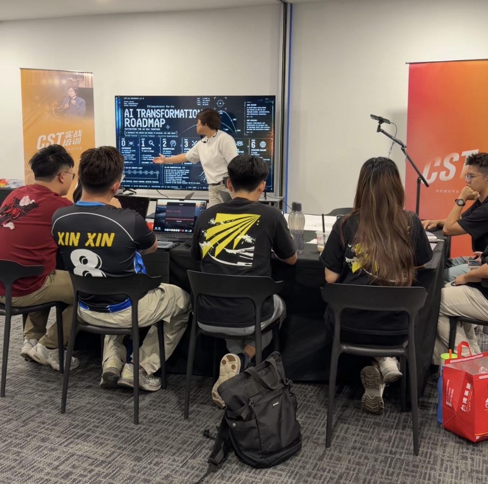
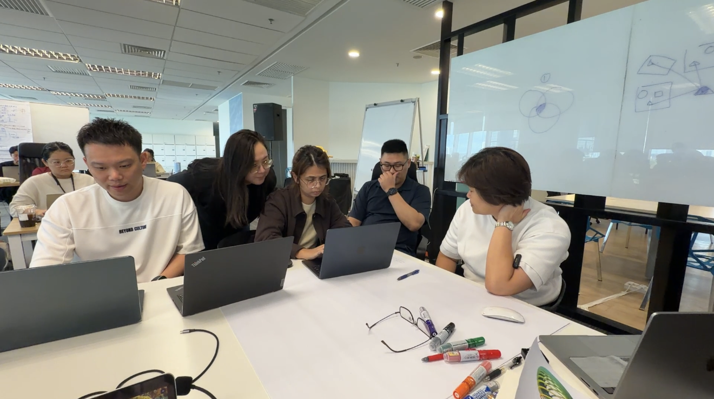

The answer could apply to almost anyone.
CST AI INITIATIVE · AI PROMPT THINKING
Stop asking AI for better answers.
Start learning how to think with AI.
Built by someone without a website designer background or IT/programmer background.
AI Prompt Thinking helps founders, leaders and working professionals break down problems, build useful context, ask better questions, identify blind spots and improve AI responses through a structured thinking loop.
YOUR CURRENT AI EXPERIENCE
01The answer sounds polished, but too generic.
02You have many ideas, but no clear direction.
03You do not know what context AI needs.
04You are unsure whether the answer is correct.
THE GAP MAY BE THINKING—NOT TYPING.01 · THE REAL PROBLEM
You know how to use ChatGPT.
But the answers still feel just okay.
The challenge is often not the AI tool. It is what happens before you type the prompt.
When the problem is unclear, the context is incomplete or the first answer is accepted too quickly, AI can only produce something broad and surface-level.
Better AI work begins by slowing down long enough to understand the task, organise what matters and decide what a useful answer should help you do.
You are not sure what background AI needs.
You accept the first draft before checking what is missing.
You can create output, but do not know how to make it repeatable.
02 · FOUR COMMON AI MISJUDGEMENTS
AI can support your thinking.
It should not replace it.
Four common habits can make AI look useful while quietly limiting the quality of the work.
Using AI like Google
You search for an answer instead of exploring the problem, alternatives and trade-offs.
SHIFT · SEARCH → THINKBelieving AI is always right
A confident answer may still be incomplete, unsuitable or factually wrong.
SHIFT · CONFIDENCE ≠ ACCURACYLetting AI replace your thinking
Copying the first response saves time now, but weakens judgement over time.
SHIFT · THINK > COPYExpecting AI to solve every problem
AI can process knowledge. Trust, relationships, responsibility and judgement remain human.
SHIFT · KNOWLEDGE ≠ HUMANITY03 · BETTER PROMPTS BEGIN WITH BETTER THINKING
The prompt is not
the starting point.
It is the result of better thinking.
Understand the problem→Organise the context→See what may be missing→Design the prompt
04 · FIVE-STEP AI PROMPT THINKING PROCESS
A practical way to move
from confusion to clarity.
Use the five steps before asking AI to produce the final answer.
Break Down the Problem
Separate the situation, goal, people, constraints and decisions involved.
Ask Clarifying Questions
Identify what you know, what you need and what remains unclear.
Structure the Context
Organise the useful background so AI can respond to your real situation.
Identify Blind Spots
Look for assumptions, missing angles, risks and alternative explanations.
Design the Prompt
Turn the thinking into a clear instruction, then review and improve the response.
05 · WHAT PARTICIPANTS LEARN
Not just what to type.
How to think before you type.
Participants build a practical set of thinking habits that can be used across different AI tools and work situations.
Concept Clarity
Make vague ideas easier to understand and work with.
Context Building
Give AI the background it actually needs.
Approach
Choose how to enter and examine a problem.
Aspect
Identify the important dimensions of a situation.
Keyword & Mind Map Expansion
Turn a starting idea into connected possibilities.
Prompt AI with AI
Use AI to question, strengthen and improve your prompt.
Thinking Loop
Review, challenge and refine instead of stopping at version one.
1D → 2D → 3D Thinking
Move from one answer to multiple angles and connected relationships.
From Prompt to Workflow
Recognise where repeated AI work can become a useful process.
06 · BEFORE VS AFTER
A small shift in prompting.
A bigger shift in working.
The goal is not a longer prompt. It is clearer thinking and more useful work.
BEFOREAFTER
Ask AI for an answer
→Use AI to explore the problem
Give very little background
→Build context around the real situation
Accept the first response
→Review, challenge and improve
Copy output quickly
→Keep human judgement in the loop
Use one prompt at a time
→Notice opportunities for repeatable workflows
07 · AI MATURITY PROGRESSION
From asking for answers
to improving how work happens.
You do not need to jump straight into automation. Build the thinking foundation first.
Ask
Ask AI for answers.
Prompt
Write clearer prompts.
Think
Use AI to explore and challenge.
Loop
Review and improve step by step.
Workflow
Recognise repeatable opportunities.
08 · WHO THIS IS FOR
For people who already use AI—
but want more useful results.
No coding or technical background is required.
FoundersBusiness ownersLeaders & managersHR teams
Admin & operationsTrainers & consultantsMarketersWorking professionals
09 · REAL WORK APPLICATIONS
Use it in the work
you already do.
AI Prompt Thinking supports everyday tasks across roles and industries.
Prepare replies, understand concerns and adjust tone for different situations.
Clarify goals, map tasks, identify risks and plan next steps.
Think through team issues, policies and sensitive communication.
Compare options, challenge assumptions and examine trade-offs.
Develop stronger briefs, ideas, angles and audience context.
Structure information, strengthen reasoning and find missing pieces.
10 · WORKSHOP IN PRACTICE
Learn by discussing,
testing and improving.
Participants work with practical situations, make their thinking visible and learn from the room.


11 · PARTICIPANT TESTIMONIALS
Hear directly
from participants.
Watch participants share their own learning experience. CST does not add or rewrite their words.
Watch this testimonial on YouTube ↗12 · LEARNING PATHWAY
Start with a practical
AI Prompt Thinking Workshop.
Build the foundation for clearer prompts, stronger thinking loops and future workflow opportunities.
- Bring practical work situations
- Practise the five-step thinking process
- Review and improve AI responses
- Recognise where repeated work may become a workflow
AI PROMPT THINKINGWORKSHOP
Think better with AI
A practical starting point for founders, leaders, teams and working professionals.
PUBLICRM268Per participant
ACTIVE CHIMPSFOCIncluded with membership
Contact CST for the latest schedule, fees and programme details.
13 · FREQUENTLY ASKED QUESTIONS
Do I need coding knowledge?
No. The workshop focuses on thinking and communicating with AI.
Is this only for ChatGPT?
No. The thinking process can be used with different conversational AI tools.
Will I receive prompt templates?
The focus is not memorising templates. You will learn how to build prompts from clearer thinking and context.
Is this suitable for beginners?
Yes. It is especially useful for people who already ask AI questions but want more useful results.
Can CST run this for a team?
Contact CST to discuss the appropriate format for your organisation or department.
Where can I confirm the details?
Contact CST for the latest schedule, fees and programme details.
14 · YOUR NEXT STEP
Better AI work starts
with better thinking.
Learn to break down the problem, build useful context and improve AI responses through a structured thinking loop.
Ask about the Workshop ↗Contact CST for the latest schedule, fees and programme details.